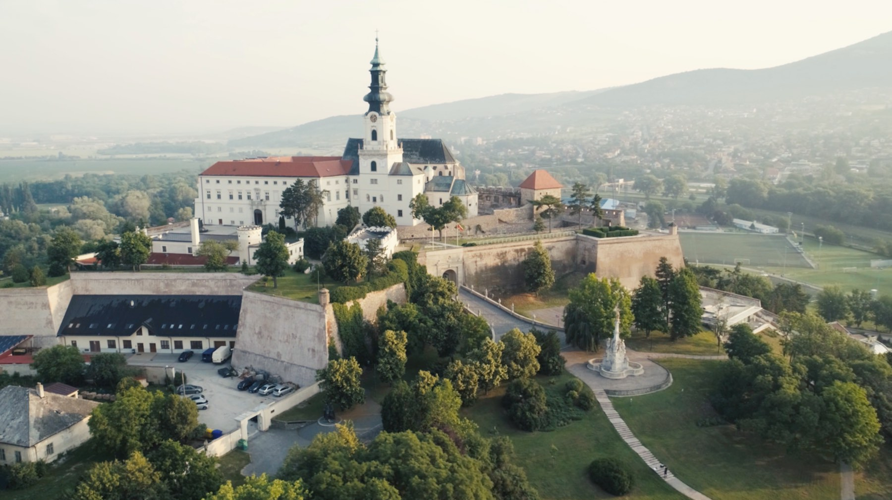

Kaviareň vznikla v roku 2024 ako malé miesto pre ľudí, ktorí majú rady dobrú kávu a príjemnú atmosféru.
Kávu pripravujeme z čerstvo pražených zŕn a snažíme sa podporovať lokálných dodavateľov.
Nájdeš nás v centre Nitry.
Informácie o meste nájdeš aj na stránke mesta Nitra.

Fiktívna kaviareň - školský projekt.